1游戏简介
终于到了！你和团队抵达了南极，但这只是开始。建造高效的站点网络、勘探广袤冰原、挺进陨石撞击点——用你的学识与资源筹备未来的探险，实施科研项目。即便气温骤降，也要保持冷静的判断。在这个暴风肆虐的环境里，每一次冒险都需谨慎权衡。
如何获胜
游戏共进行 6回合。每回合玩家会筹备一次探险并执行若干行动。在第 3、5、6回合结束时，各进行一次里程碑（Milestone）评分。第三次里程碑评完（即第6回合结束）后游戏结束，胜利点最多者获胜。
回合结构
每回合包含三个阶段：
- Ⅰ 准备阶段（Preparation）——所有玩家同时从个人牌堆抽取到自己的版图上，然后结算探险奖励；
- Ⅱ 规划阶段（Planning）——所有玩家同时获得2名探险者，并从公共牌堆抽5张牌；
- Ⅲ 行动阶段（Action）——从起始玩家起按顺时针，每回合执行一个行动或选择跳过，直至所有玩家跳过。
第3、5、6回合结束后会进入第 Ⅳ 阶段：里程碑评分。
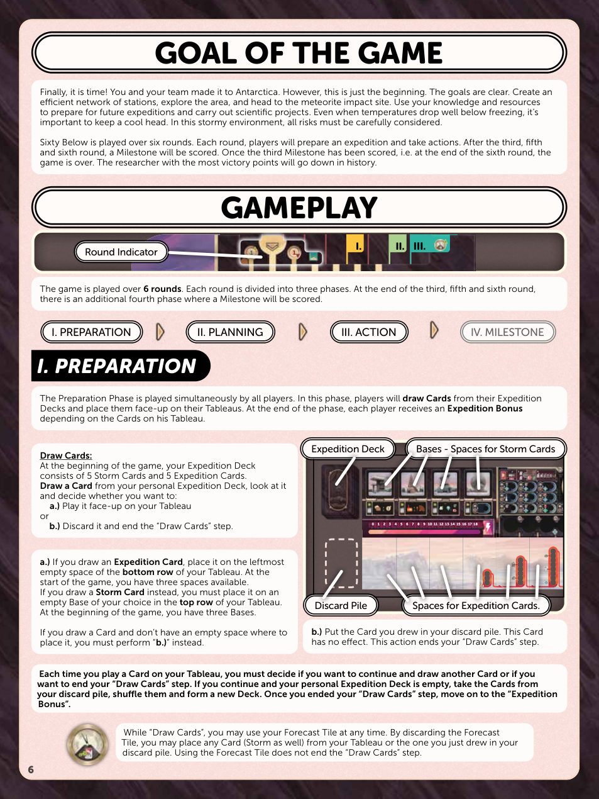
2配件清单
通用配件
含一个常驻行动位。
用于展示可购买的专家。
每局随机抽取2张放置于专家规划板下方。
温标–54.1°~–57.5°，分4摞面朝下放置。
通用专家，可放入任意列。
分别放入布袋待抽。
放在专家规划板左侧。
用于抽取专家。
加入公共牌堆。
仅–60.4° 陨石使用。
加入公共牌堆。
仅–60.2° 陨石使用。
本局使用其中1块。
每人配件
由两片拼合。
正面「Ⅰ」、背面「Ⅱ」「Ⅲ」。
5名预备（Reserve），12名置于公共供应。
（Upgrade Lv.1）
（Upgrade Lv.2）
（Upgrade Lv.3）
5张风暴+5张探险（标记0°）。
单人模式（对抗Arka）专用配件
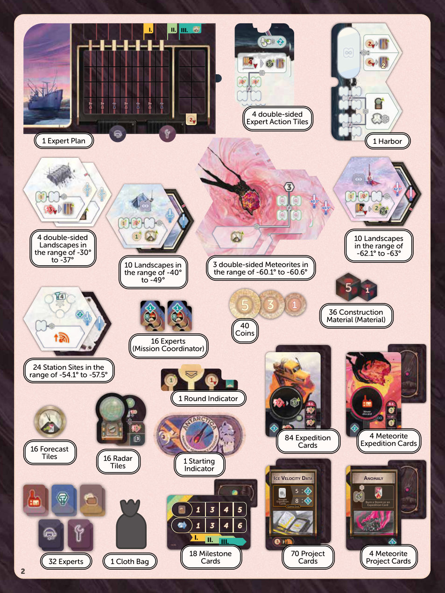
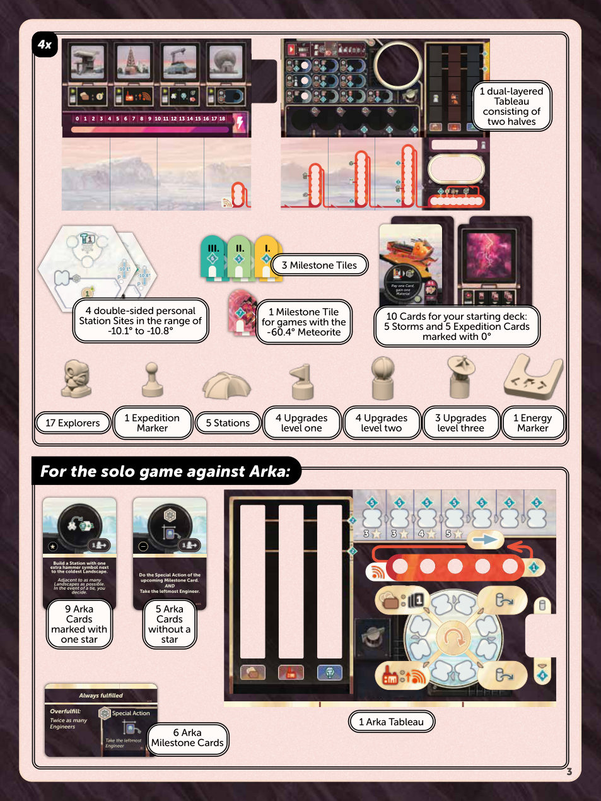
3游戏准备
3.1公共布置（General Setup）
- 将专家规划板与港口板如图并排放置，把回合指示物放在规划板左侧的对应槽位。
- 用任务协调员填满规划板右侧区域；从布袋中随机抽取其余专家填满各列。3+、4+ 的空格只在3人或4人局时填满；剩余专家留在布袋内，本局不再使用。
- 从公共牌堆中随机抽取2张专家行动板块放在规划板下方。【译者注】初玩推荐使用本规则书所示的两张；详见第10页图示。
- 把温标–54.1°~–57.5° 的 24张站点基地单独洗混，分别形成4摞面朝下的牌堆。
- 将 84张探险牌+70张项目牌洗在一起形成公共牌堆，旁留空间放公共弃牌堆。
- 把金币、建材、雷达板块、预报板块摆成公共供应。
- 从–30°~–37° 冰原中随机抽取等于玩家数的块数，每块随机选一面，从港口板起从左到右摆放（用红点定位）。所有冰原朝向必须一致。
- 同样抽–40°~–49° 的冰原，从最后一块已翻开的冰原起按红点逐一放置（面朝下）。
- 将选定的陨石左上六边格紧贴最后一块冰原放置。【译者注】首次游戏推荐使用 –60.2° 陨石；其他陨石的设置细节见第18页。
- 从–62.1°~–63° 冰原中同样抽取等量，依次放在陨石旁（面朝下），按红点定位。
- 剩余的冰原与陨石放回盒中，本局不再使用。
3.2个人布置（Personal Setup）
- 取出你的 4块个人站点基地（双面标记–10.1°~–10.8°）。
- 每位玩家从公共牌堆抽 7张，选 4张放入版图上方的个人展示区，其余3张放入公共弃牌堆。【译者注】熟悉游戏后，可在「准备阶段步骤13」之后再决定弃哪3张。
- 选定起始玩家，其获得起始指示物。按顺时针，其右方的下一位玩家依次获得比前一位多1的能量（即4人局：1/2/3能量）。
- 起始玩家的右方玩家随机抽取 4张（1–2人局）/ 5张（3人局）/ 6张（4人局）里程碑牌，挑1张作为个人里程碑。其余继续向右传；最后起始玩家拿到3张里程碑，选1张作个人里程碑，其余2张面朝上置于专家规划板上方，作为公共里程碑。
- 把两片拼合为你的个人版图，置于面前。
- 取出10张起始牌（5张风暴+5张标记0° 的探险牌），洗好形成个人探险牌堆，面朝下放在版图旁。下部留出个人弃牌堆的位置。
- 选择一种颜色，取出对应配件：
— 1个探险指示物放在「0」格
— 1个能量指示物放在「0」格
— 5个站点
— 4张Lv.1升级、4张Lv.2升级、3张Lv.3升级
— 5名探险者放在版图右侧的预备区
— 其余 12名探险者放入公共供应（图未显示） - 取 3块你颜色的里程碑板块、1块预报板块、2枚金币与 1个雷达板块。
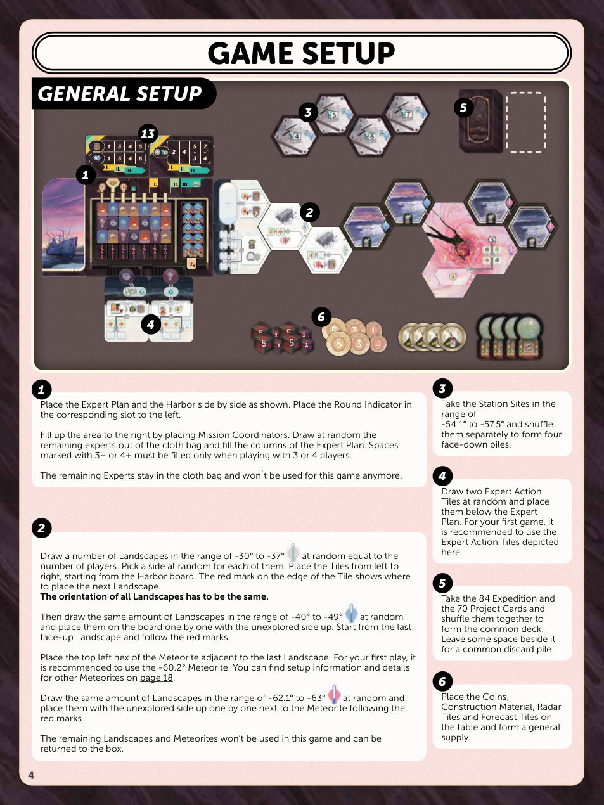
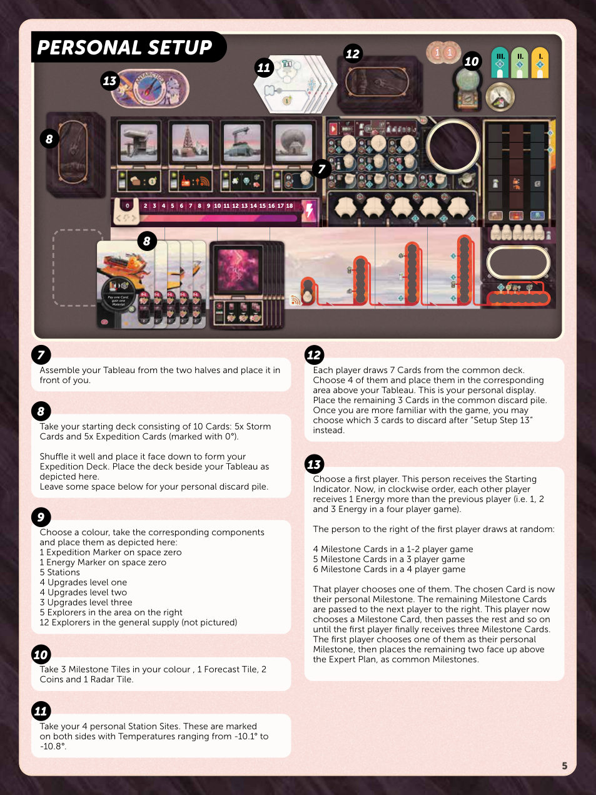
4回合流程总览
共 6回合，每回合包含 3个阶段；第3、5、6回合结束后还会进行里程碑评分。
| 阶段 | 何时 | 行动 |
|---|---|---|
| Ⅰ 准备阶段 | 所有玩家同时 | 从个人探险牌堆抽取至版图；结算探险奖励 |
| Ⅱ 规划阶段 | 所有玩家同时 | 获得2名探险者；从公共牌堆抽5张选牌 |
| Ⅲ 行动阶段 | 顺时针轮流 | 每位玩家每次执行1个行动或跳过 |
| Ⅳ 里程碑阶段 | 第3/5/6回合末 | 玩家选1张里程碑牌并放置里程碑板块 |
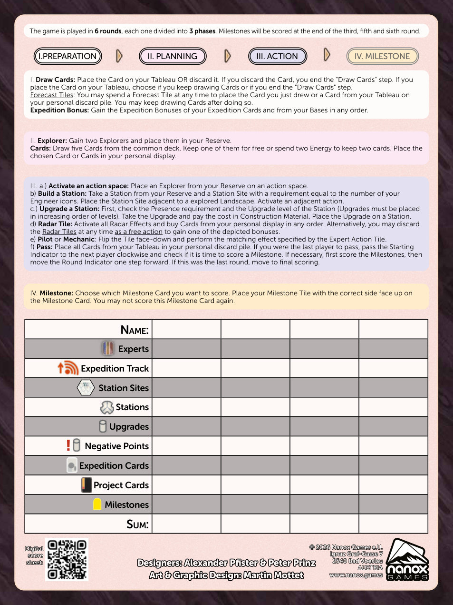
5Ⅰ 准备阶段（Preparation）
所有玩家同时进行：从个人探险牌堆抽取放到版图，然后结算奖励。
5.1抽牌步骤（Draw Cards）
起始牌组含 5张风暴+5张探险。从个人牌堆抽1张，看过后选择：
- a) 面朝上放到版图；或
- b) 弃入个人弃牌堆，结束抽牌步骤。
放置规则
- 抽到探险牌：放在版图下行最左的空位。起始有3个空位。
- 抽到风暴牌：放在顶部3个基地（Base）中任选一个空的。起始有3个基地。
- 没有空位可放时，必须执行b（弃牌结束）。
预报板块（Forecast Tile）
抽取过程中任何时候可消耗预报板块，将刚抽取到的牌或版图上任意一张牌（含风暴）移入个人弃牌堆。使用预报板块不结束抽取步骤。
牌堆耗尽
若抽完牌堆、个人弃牌堆仍有牌，洗混形成新牌堆继续抽。
5.2探险奖励（Expedition Bonus）
结束抽取后，按任意顺序结算版图上探险牌、风暴牌、基地的奖励。
探险牌的奖励
- 版图上有 0或1张风暴：获得顶部奖励；
- 有 2张风暴：获得底部奖励；
- 有 3或4张风暴：无任何探险牌奖励。
风暴提供的能量
| 风暴数量 | 获得能量 |
|---|---|
| 1张风暴 | 2能量 |
| 2张风暴 | 5能量 |
| 3或4张风暴 | 11能量 |
三个基地（未覆盖风暴时）
版图上每有1个投资者图标（含起始已印的1个+ 探险牌上的），获得1枚金币。
版图上每有1个无线电图标（含起始已印的1个+ 探险牌上的），沿箭头方向推进探险指示物相应步数。路过或到达奖励格时立即获得奖励。
推进后若腾出下行空位，下回合起可往其中放置新的探险牌。若到达轨道终点，会进入环形区（Rondel），可多次获得奖励。
二选一：
- 购买站点：取最左站点，按对应价格支付建材（首个站点免费），放入预备区；
- 消耗1能量换1建材：可执行次数 = 版图上工程师图标数（含起始+探险牌）。
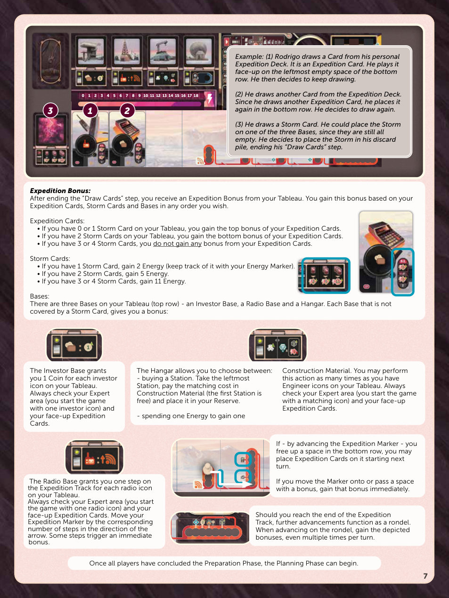
6Ⅱ 规划阶段（Planning）
所有玩家同时执行以下两步：
6.1探险者（Explorer）
从公共供应取 2名你颜色的探险者，放入预备区（Reserve）。
6.2抽牌（Cards）
从公共牌堆抽 5张：
- 免费保留 1张；或
- 花 2能量保留 2张。
保留的牌放入你的个人展示区。
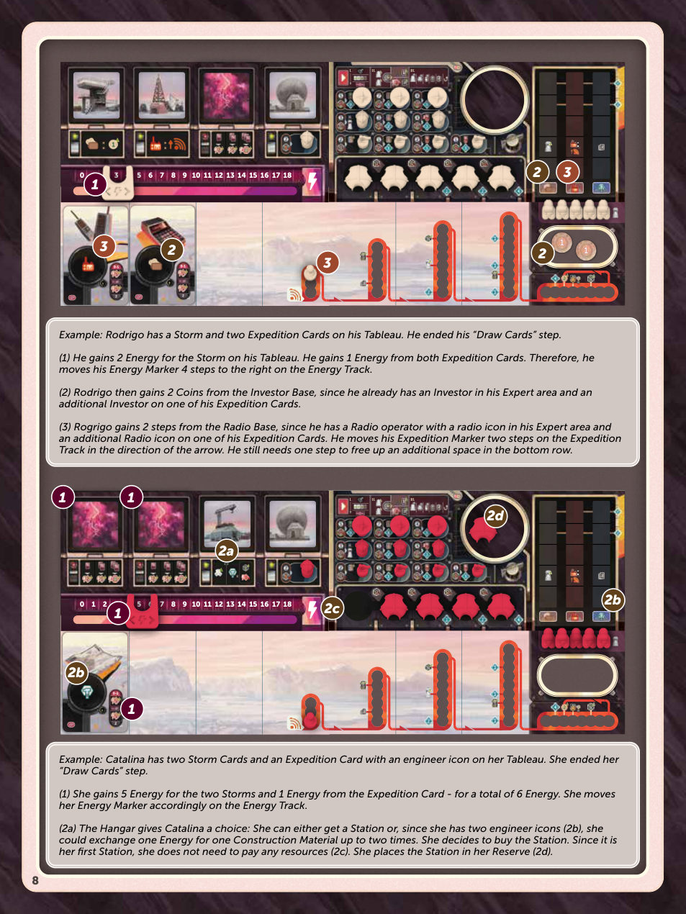
7Ⅲ 行动阶段（Action）
从起始玩家起按顺时针轮流。每回合执行正好1个行动或选择跳过。所有玩家跳过即进入下一阶段（回合末或里程碑）。
7.a激活行动位（Activate an Action Space）
从预备区取1名探险者放到一个空的行动位（脚印图标）。位置包括：
- 专家行动板块（Expert Action Tiles）
- 港口板（Harbor）
- 冰原、陨石
- 站点基地（Station Sites）
- 项目牌（Project Cards）
放置时立即获得位置奖励（Placement Bonus），再执行该行动位指示的齿轮效果。一旦被占据，行动位对他人不再可用。
7.b建站点（Build a Station）
若你在规划阶段购买了站点，则此行动可建1个站点基地。
- 数出版图上工程师图标总数（含起始已印1个+ 探险牌上的）。从站点基地堆或个人4块中取一张，工程师图标数 ≤ 你的工程师数。
- 放置该基地，使其至少有一条边接触一块已探索冰原。可任选基地任一面。
- 把站点放到基地上的对应空格，并作为奖励执行一个邻近已探索冰原的齿轮效果。
站点基地本身视为一块已探索冰原——其行动位对所有玩家开放。
7.c升级站点（Upgrade a Station）
升级必须按 1 → 2 → 3 顺序构建。每个升级需要：
- 建材（Construction Material）：等级1 = 2，等级2 = 5，等级3 = 8；
- Presence（在场）：邻近站点的探险者+站点数量，含站点基地上直接放置的探险者。
| 升级 | 建材 | Presence要求 | 奖励 |
|---|---|---|---|
| 等级1 | 2 | 3 | 从专家规划板取1名专家 |
| 等级2 | 5 | 4 | 烧掉1张风暴（来自版图或个人弃牌堆）；获得1个新基地（不提供奖励，仅多1个放风暴的位置） |
| 等级3 | 8 | 5 | 获得1个雷达板块；立即获得1名探险者；下规划阶段多获得1名探险者 |
7.d使用雷达板块（Use a Radar Tile）
从版图取1个雷达板块放入公共供应。然后按任意顺序执行：
- 激活雷达效果：依次激活版图上所有带雷达图标的牌（项目牌 / 探险牌）。
— 探险牌：激活后将该牌移入个人弃牌堆；
— 项目牌：激活后将牌转60° 标记本回合已用； - 买牌：从个人展示区买任意数量的牌。
— 探险牌：满足条件（若有），支付费用，将牌面朝下放到牌堆顶；
— 项目牌：支付费用，置于版图右侧。
7.e激活飞行员或机修师（Activate a Pilot or Mechanic）
版图上的飞行员 / 机修师板块可翻面朝下（灰面），执行对应专家行动（板块背面所述效果）。每位飞行员 / 机修师板块都是永久板块——整局只能用一次。详见 §10。
7.f跳过（Pass）
若你不能再或不想再执行行动，把版图上所有风暴和探险牌移入个人弃牌堆。最多可将 1名未用探险者带入下一回合，其他未用探险者 / 站点都不能保留。
所有玩家跳过后，回合结束。检查是否需进行里程碑评分；之后将起始指示物交给下一玩家，回合指示物前进1格。第5回合把回合指示物移到最后一格时，每位玩家额外获得 1个预报板块。然后开始新回合的准备阶段。
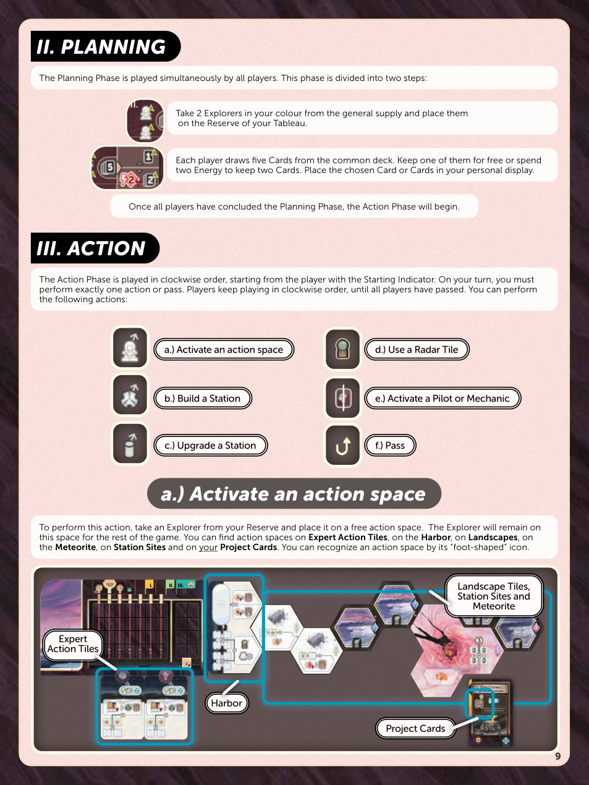
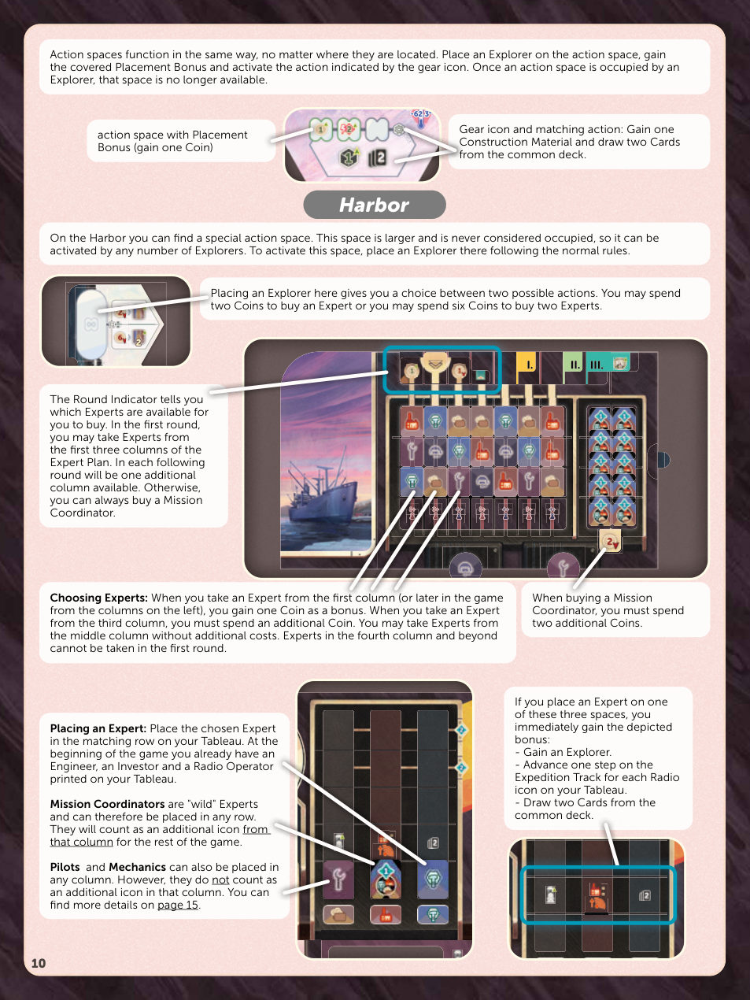
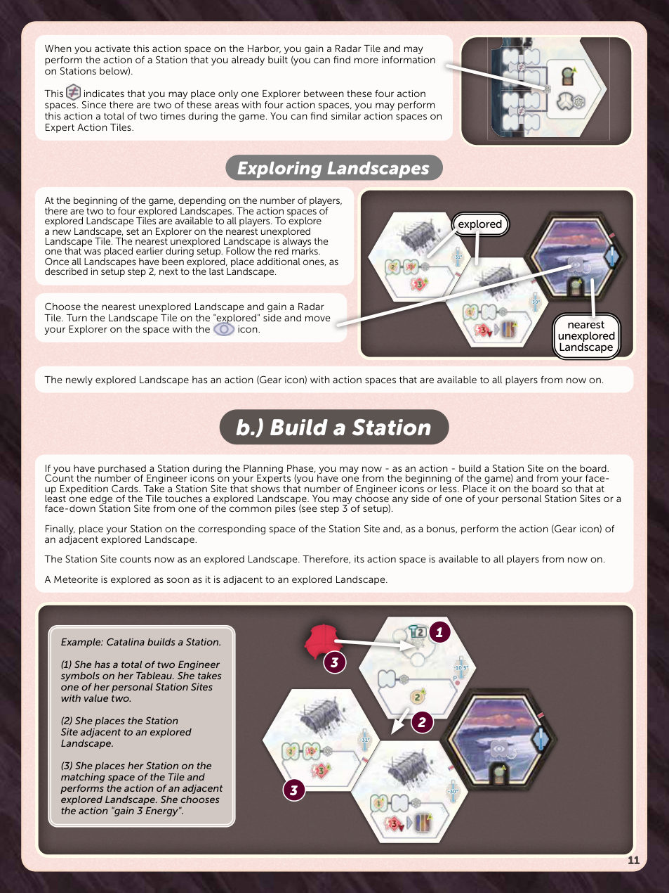
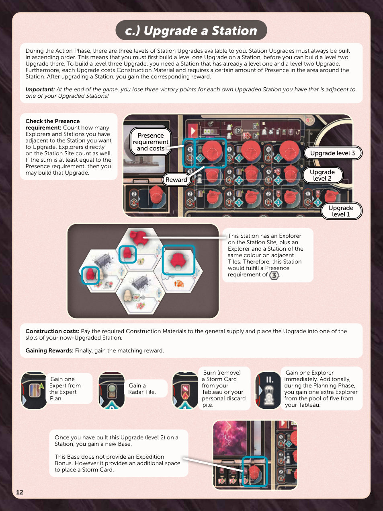
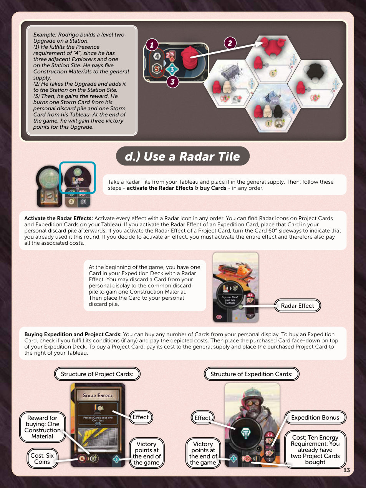
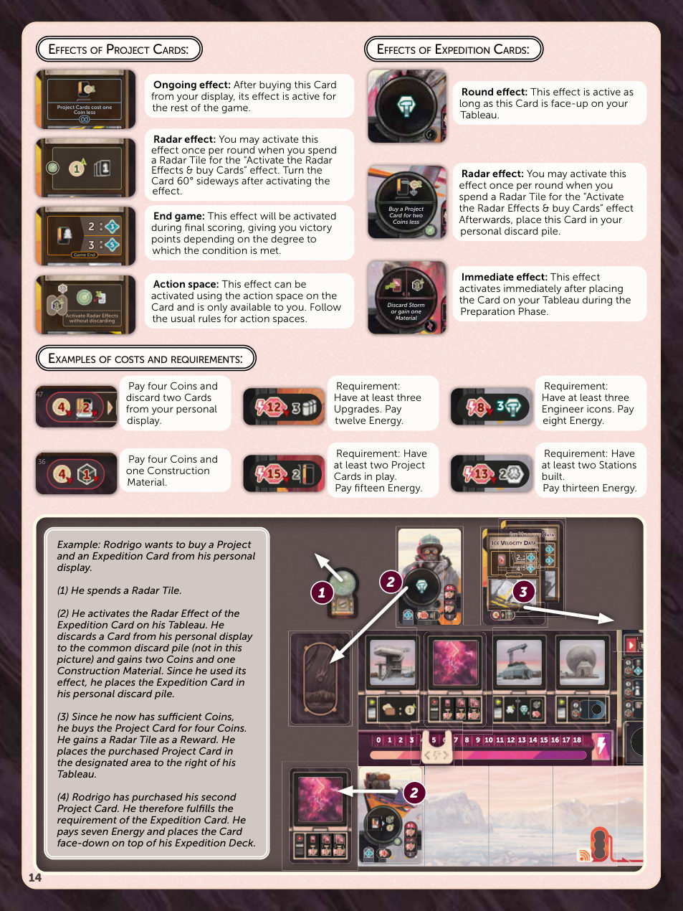
8Ⅳ 里程碑阶段（Milestone）
在第 3、5、6回合结束后，每位玩家对一张里程碑牌进行评分。
8.1选牌
第1次评分（即第 3回合末）时，可从三张可用里程碑牌中选1：两张公共里程碑+1张个人里程碑。【译者注】每张里程碑牌含 4列：前2列对应第1次评分；中2列对应第2次；后2列对应第3次。
8.2放置里程碑板块
用你颜色对应序号的里程碑板块（Ⅰ / Ⅱ / Ⅲ），放在所选里程碑牌上：
- 满足第一列条件 → 放低VP 面；
- 满足第二列条件 → 放高VP 面；
- 任何条件都不满足 → 把板块放回盒中。
同一张里程碑牌在后续评分中不能再被选。
8.3里程碑牌条件符号
每个条件由符号+数字构成。常见类型详见 §12符号说明页。条件举例：版图上的工程师数量、投资者数量、已建站点数量、特定温度冰原上的探险者+站点数量等。
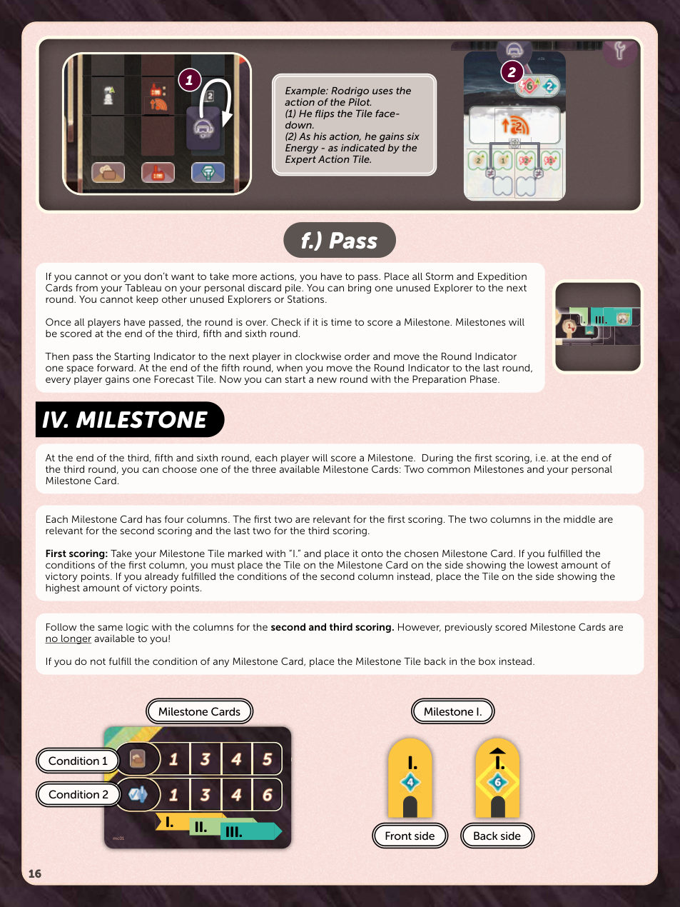
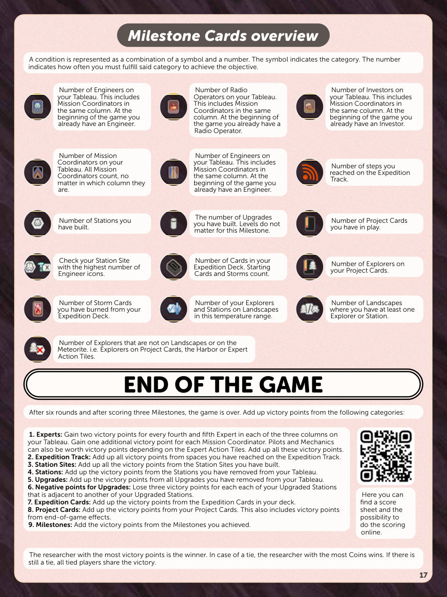
9陨石图鉴
本游戏共有 6块陨石。每块陨石只要与一块已探索冰原相邻，即视为已探索。Presence = 紧邻陨石的你的探险者与站点之和。
–60.1° 陨石A（基础）
设置：无额外步骤。
行动：需Presence 3。获得2枚金币+齿轮图标所示奖励。
–60.4° 陨石B（陨石探险）
设置：用4张陨石探险牌形成公共展示区。
行动：需Presence 3。从4张公开牌中选1张直接放到牌堆顶，并额外获得1个预报板块。该牌立即视为已购入的牌，整局保留在牌堆中。
–60.2° 陨石C（陨石项目）
设置：用4张陨石项目牌形成公共展示区。
行动：需Presence 3。从4张公开牌中选1张免费建成，加为你的项目；额外推进探险指示物 2步。
–60.5° 陨石D（第四里程碑）
设置：在陨石上放第 4 块里程碑板块，并在公共供应中放4张未用里程碑牌（面朝上）。
行动：需Presence 3。获得第 4 块里程碑板块、2个建材、并挑选1张里程碑牌——只有你能对其评分。在任意里程碑阶段，你可以把第4块板块放到你还没评过分的任意里程碑牌上（须满足其条件）。
–60.3° 陨石E（终局VP）
设置：无额外步骤。
行动：需Presence 6 或 4。终局时按Presence获得对应分数；作为行动获得1个建材+从公共牌堆抽2张放入个人展示。
–60.6° 陨石F（隐式行动）
设置：无额外步骤。
行动：本陨石没有独立行动位。仅当你在它旁边建站点时（见 §7.b）触发，获得 5能量。
终局：检查你的Presence。Presence最高者 +5VP，次高者 +2VP；平分均得。
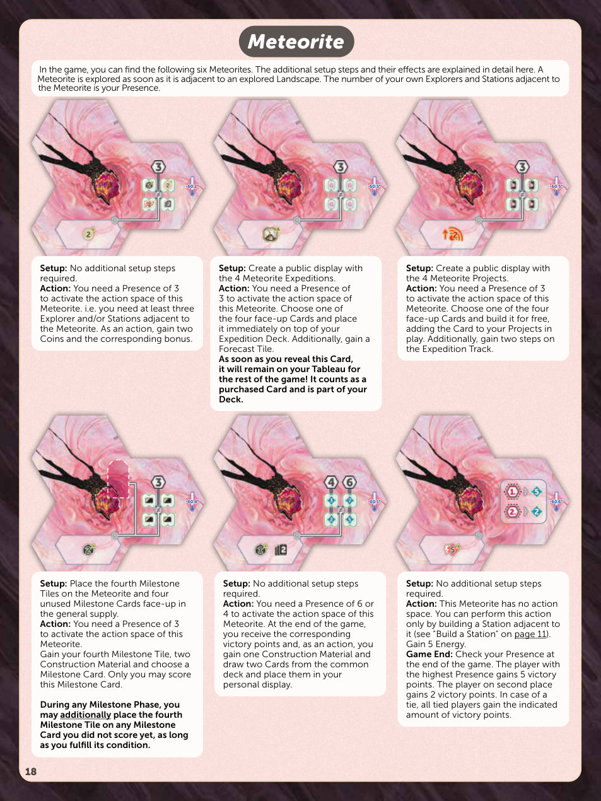
10飞行员 / 机修师（Pilot / Mechanic）
本局随机抽取的2张专家行动板块中，一张关联飞行员（Pilot），一张关联机修师（Mechanic）。版图上的飞行员 / 机修师板块可翻面执行对应专家行动，每片整局只能用一次。
飞行员（Pilot）行动
从版图或个人弃牌堆烧掉1张探险牌（不能是风暴），获得 2金币。终局时该专家值 2VP。
机修师（Mechanic）行动（典型示例，详见原书）
把一名探险者从一块冰原移到相邻冰原的空行动位，并执行其行动。不得与陨石互移。终局 +2VP。
把一名探险者移到相邻冰原空位并执行行动。终局 +2VP。
花6能量，获得2建材、2金币、买1张项目牌。终局 +2VP。
升级一个站点，本次升级Presence减免 3。终局 +2VP。
建造1个站点，要求的工程师图标可多 2 个。终局 +2VP。
获得2个建材。终局 +2VP。
获得6能量。终局 +2VP。
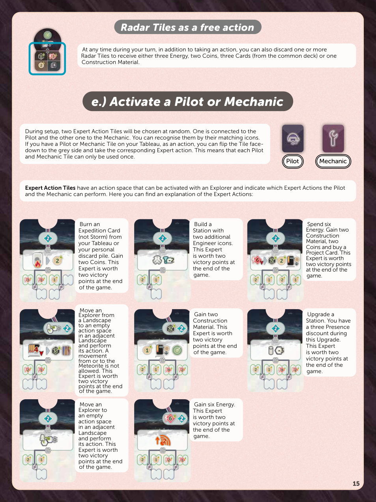
11终局计分（End of the Game）
6回合、3次里程碑评完后进入终局。加总以下9类来源：
- 专家：每列的第4、5名专家各2VP；每多1名任务协调员 +1VP；飞行员 / 机修师按专家行动板块给VP。
- 探险轨道：到达格上累积的VP。
- 站点基地：已建站点基地上的VP。
- 站点：已从版图移除的站点的VP。
- 升级：已从版图移除的升级的VP。
- 升级负分：你的每一个升级站点，若与你的另一个升级站点相邻，扣3VP。
- 探险牌：个人牌堆中的探险牌VP（含起手与风暴）。
- 项目牌：项目牌VP（含终局效果）。
- 里程碑：已评里程碑板块的VP。
胜利点最多者获胜；平局则金币多者胜；再平局则共享胜利。
12符号说明（Symbology）
12.1项目牌效果类型
- Ongoing effect（持续效果）：购买并放置后，作用至游戏结束。
- Round effect（回合效果）：在版图上正面朝上的期间生效。
- Radar effect（雷达效果）：每回合用雷达板块激活时可用一次；探险牌用后移入个人弃牌堆，项目牌用后转60°。
- End-game effect（终局效果）：终局评分时按达成度给VP。
- Immediate effect（即时效果）：准备阶段把牌放上版图时立即触发。
- Action space effect（行动位效果）：通过牌上的脚印图标激活，仅对你可见。
12.2计数符号（里程碑条件）
- 版图上某类专家总数（含任务协调员）；
- 已购项目牌数；
- 某温度范围内你的探险者+站点数；
- 已烧掉的卡牌数；
- 升级过的站点数；
- 已建的站点数；
- 特定温度下至少有1块冰原上有你的探险者或站点；
- 探险指示物到达的步数；
- 牌堆中的卡牌数（含起手与风暴）。
12.3Round effect替代符号
项目牌的回合效果常被标为可替代版图上的无线电操作员 / 工程师 / 投资者符号之一，作为该列的额外图标。
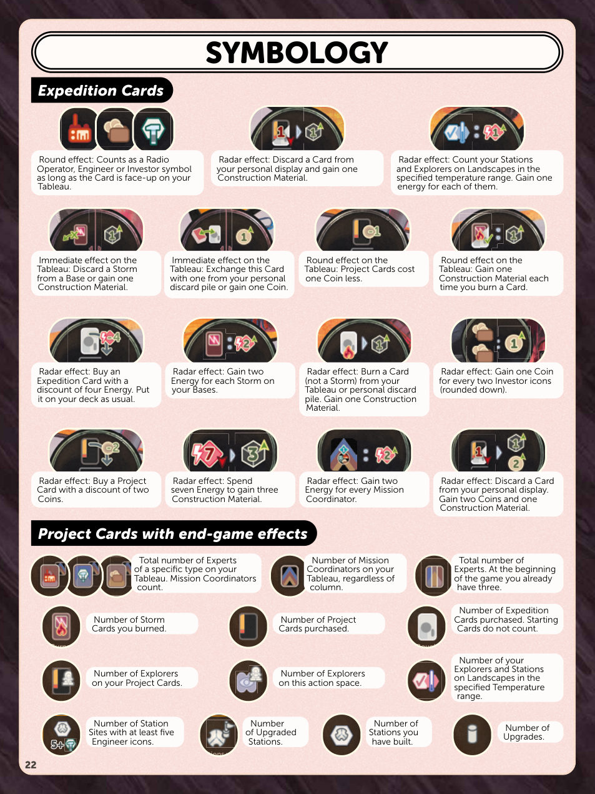
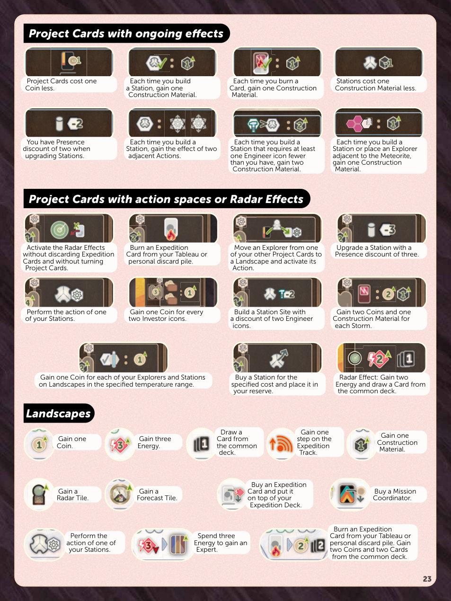
13单人模式：对抗Arka
Solo模式按两人局正常准备，完成个人布置至步骤12后，再做以下 步骤13：
13.1Arka设置
- 取出 Arka版图，把4块个人站点基地、5个站点、15名探险者、3块里程碑板块以及一色所有升级放在版图旁。
- 洗 Arka里程碑牌，抽出3张放在版图下方，其余放回盒中。
- 取1名探险者放在探险路径的第1步；取最后1名放在环形区（Rondel）的起点。探险轨道指示物放在轨道第1格。Arka 不需要能量指示物。
- 取Arka的 9张带 ★ 行动牌。再根据难度抽Arka的无 ★ 行动牌：
- 标准：1–2张
- 传奇：3–4张
- 史诗：5张
- 洗混组成面朝下的行动牌堆放在Arka版图旁，留空间放弃牌堆与公开区。
13.2Arka的行动
Solo玩家正常进行所有阶段。Arka 没有准备和规划阶段，只在行动阶段活动，并在第3、5、6回合末评分里程碑。
Arka每回合可打出至 3颗 ★（第一回合）、之后每回合至 4颗 ★。揭示1张行动牌，按从上到下顺序执行；若不能执行，把环形区上的探险者前进 1步。牌打出后亮开放在牌堆旁稍作错位，便于计数。
若行动牌堆空，洗混弃牌堆组成新牌堆。回合结束后，已亮开的牌移入弃牌堆。
13.3行动牌上的常见效果
- 环形区：把探险者沿环形区顺时针前进指定步数，并执行经过的每个效果。
- 投资者效果：从公共牌堆抽取数 = Arka版图上的投资者图标数（面朝下放在版图左侧，仅计终局VP，不触发效果）。
- 无线电效果：把Arka的探险指示物沿轨道推进 = 无线电图标数；越过末格则回到探险路径第1步继续。
- 升级效果：取1张你选择的升级放在标记区。每个升级终局 4VP。
13.4Arka终局计分
- 专家：同玩家规则（每列第4、5名专家各2VP）。
- 升级：每个 +4VP。
- 探险轨道：每步 +1VP（每5步在路径上显示）。
- 行动牌：加总牌面VP；带「终局」效果的项目牌始终取较低 VP值。
- 里程碑：同玩家规则。
13.5Arka的里程碑评分
Arka自动满足「低VP」条件。要拿「高VP」，须满足与你相比的指定条件。评完后把该里程碑牌翻面朝下，里程碑板块放在朝下一面。
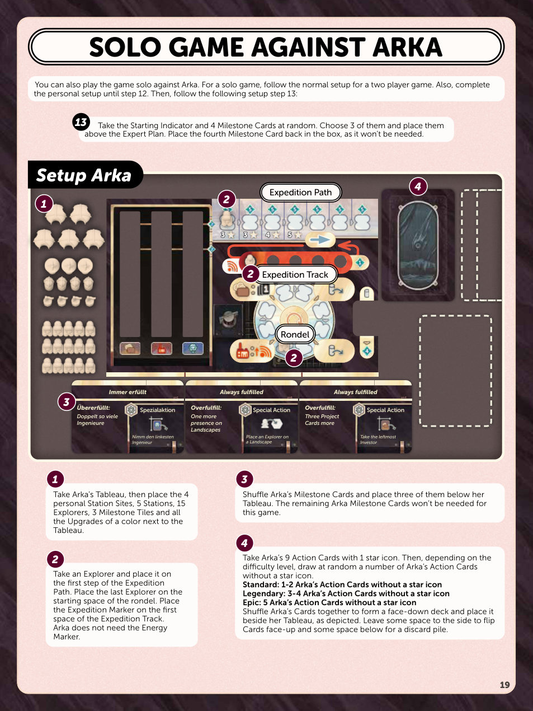
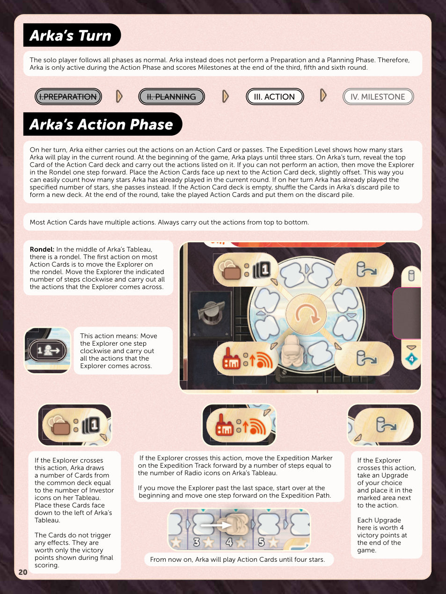
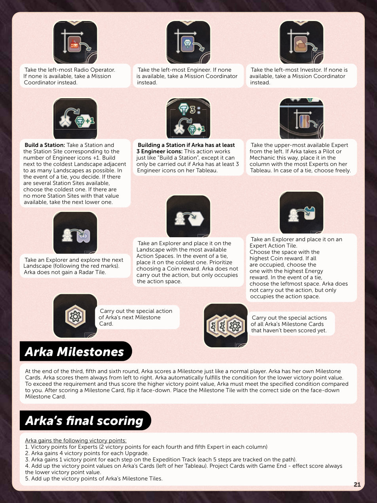
14速查表
回合流程
抽牌：把牌放到版图上，或弃牌结束抽牌步骤。如弃牌则结束；如放牌则选择继续抽或结束。
预报板块：任何时刻可弃一张预报板块，把刚抽的牌或版图上的牌移入个人弃牌堆，之后可继续抽。
探险奖励：按任意顺序结算版图上探险牌与基地的奖励。
探险者：获得2名探险者放入预备区。
抽牌：从公共牌堆抽5张；免费留1张或花2能量留2张，放入个人展示区。
a 激活行动位：从预备区取1名探险者放在行动位上。
b 建站点：取预备区的站点+工程师数对应的站点基地，邻接已探索冰原放置，激活邻近行动。
c 升级站点：先查Presence与等级（按等级递增），支付建材，放上升级。
d 雷达板块：激活雷达效果+买牌（任意顺序）；也可随时弃雷达板块作为免费行动换取3能量 / 2金币 / 3牌 / 1建材。
e 飞行员 / 机修师：翻板块执行对应行动。
f 跳过：把版图所有牌移入个人弃牌堆；若最后一个跳过，交出起始指示物并检查里程碑。
选择要评的里程碑牌；用对应板块按条件满足度放上或回盒。同一张牌后续不能再选。
终局计分表
| 类别 | 来源 |
|---|---|
| 专家 | 每列第4、5名专家各2VP；任务协调员每多1个+1VP；飞行员 / 机修师按板块 |
| 探险轨道 | 已到达格的VP |
| 站点基地 | 已建基地上的VP |
| 站点 | 已从版图移除站点的VP |
| 升级 | 已从版图移除升级的VP |
| 负分 | 每对相邻同色升级站点–3VP |
| 探险牌 | 牌堆中探险牌VP |
| 项目牌 | 项目牌VP（含终局效果） |
| 里程碑 | 已评里程碑板块VP |
版权与制作
游戏：Sixty Below
设计师：Alexander Pfister & Peter Prinz
美术与平面设计：Martin Mottet
出版：© 2026Nanox Games e.U.
地址：Ignaz Graf-Gasse7, 2540Bad Voeslau, AUSTRIA
网址：www.nanox.games